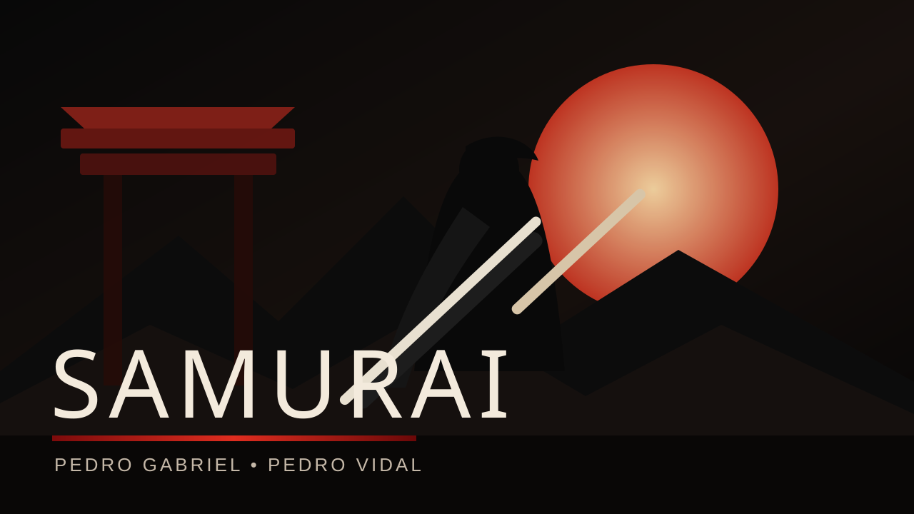

Combate corpo a corpo
Aproxime-se dos inimigos e use ataques diretos para abrir caminho.
Enfrente inimigos, domine ataques corpo a corpo e à distância, recupere suas forças em fogueiras e avance por duas fases até encarar ameaças cada vez mais perigosas.

Aproxime-se dos inimigos e use ataques diretos para abrir caminho.
O personagem também possui uma alternativa de ataque para enfrentar ameaças de longe.
Um golpe especial adiciona variedade e impacto ao sistema de combate.
Samurai usa barra de vida e dano durante os confrontos. O jogador possui curas limitadas, ativadas pela tecla R, e precisa administrar esses recursos durante a progressão.
As fogueiras funcionam como pontos importantes da jornada, com um menu próprio e restauração das cargas de cura.
Aprenda o ritmo do combate, enfrente os primeiros tipos de inimigos e avance pelo cenário.
Novos confrontos levam a um inimigo/chefe chamado Tisushigumo, cuja IA conta com diferentes ataques e mudança para uma segunda fase.
Desenvolvimento
Desenvolvimento
Build para Windows. Baixe o arquivo ZIP, extraia a pasta e execute Samurai.exe.
↓ Baixar Samurai